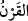
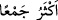
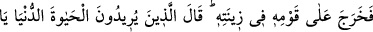
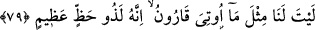

onu da dünyanın tuzağına attım.” dedi. Sonra Kârun ticaretle uğraştı, dünya ona
teveccüh etti ve tuğyanı arttı. İlmi ve kazancı sebebiyle hak iddiâsında bulundu.
“Bilmiyor muydu ki Allah, kendinden önceki nesillerden,” kâfir toplumlardan sayı,
techizat ve mal bakımından “ondan daha güçlü,” Nemrud ve diğerleri gibi ondan daha
çok” mal toplayan ve “taraftarı olan kimseleri helâk etmişti.”
“
”, aynı asırlarda yaşayan insan topluluğuna denir.
Bazıları demiştir ki: “
” ifâdesi, “ilim ve ibâdeti daha çok olan” anlamına gelir.
Meselâ İblis gibi.
Müfessirler der ki: Bu âyet, Kârûn’un, helâk olma konusundaki bilgisine rağmen;
mücerred kuvvetine ve mal çokluğuna aldandığı için Allah Teâlâ tarafından onu
azarlama ifâdesidir. Çünkü o, bu konudaki haberleri Tevrat’ı okuyarak, Mûsâ (a.s.)’dan
telakkî ederek ve yine tarih bilginlerinden de işiterek öğrenmişti.
Dolayısıyla âyetin mânâsı şöyledir: O, Tevrât’ı okumamış ve Allah’ın geçmiş
kavimlere nasıl muâmele ettiğini görmemiş miydi ki aldanıp düştüğü bu duruma düşmüş
olmasın. Elbette biliyordu; fakat ilmi onu aynı duruma düşmekten onu kurtaramadı.
Mülke, makama ve hizmetkârlarına güvenme
Senden önce de vardı bunlar, senden sonra da olacak
Kârun’un başına gelenlerden ibret al
İnatçı ve serkeş at dayak yer
“Günahkârlardan” işledikleri “günahları” helâk oldukları sırada mâzeret ileri
sürmekle meşgul olmasınlar diye “sorulmaz (Allah onların hepsini bilir).”
Nitekim bir başka âyette de şöyle buyrulur: “Onlara izin verilmez ki, özür beyan
etsinler.” (el-Mürselât, 77/36) Nitekim et-Te’vîlâtü’n-Necmiyye’de bu şekilde
kaydedilmiştir.
Hasan-ı Basrî (r.a.) der ki: Ahiret gününde mücrimlere bilgi edinmek ve toplamakla
ilgili sorular sorulmaz. Çünkü Allah, onların amellerine muttalîdir. Bilakis onlar
azarlama (tevbîh) ve başa kakma (takrî’) soruları ile muhâtab olurlar.
Bazıları demiştir ki: Onlara soru sorulmaz; beklemeden ve hesaba çekilmeden azâba
uğrarlar veya melekler onları sîmâlarından tanır ve bu yüzden onlara soru sormağa
gerek kalmaz.
79. Derken, Kârûn, ihtişamı içinde kavminin karşısına çıktı. Dünya hayatını
arzulayanlar: Keşke Kârûn’a verilenin benzeri bizim de olsaydı; doğrusu o çok
şanslı! dediler.
“Derken, Kârûn, ihtişamı içinde kavminin karşısına çıktı.”